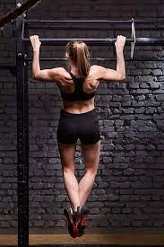

Starting a new fitness routine can be intimidating, but it doesn't have to be. Here are a few basic exercises that are great for beginners:
Stair climb with bicep curls Turn those stairs into a cardio machine — no magic wand necessary. Grab some dumbbells (or heavy household objects). Briskly walk up and down the stairs while simultaneously doing bicep curls to work your whole body.
